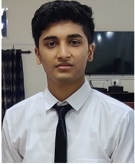

Harsh Saini
Coder
Faridabad
saini.harsh22@gmail.com
7982910235
Skills
HTML & CSS
JavaScript
C & C++
Python
MATLAB
VHDL
Git & Github
Language
English
Hindi
Projects
Real Time Face Recognition and Detection
February 2021
Read a video stream using OpenCV. Haarcascade files used for detection. Use KNN to find Prediction of face and map the predicted id to name of the user.
Telegram News Bot
January 2021
Used Python modules like Flask app for deploying, gnewsclient and for news from web and Dialog flow for making bot conversational.
Selenium-Web-Automation And Testing
January 2021
Selenium is actually web automation tool simply means that it can automate the browser.
Education
| Educational Qualification | Name of Institution | Year of Passing | % Scored or CGPA |
|---|---|---|---|
| B.Tech Electronics Instrumentation and Control Engineering | JC Bose University Of Science And Technology, YMCA Faridabad | 2023 | 9.14 [First Year] |
| 12th CBSE | Modern Vidya Niketan School , Sector-17 Faridabad | 2018 | 84.60% |
| 10th CBSE | ST.Peter's School Sector 16/A Faridabad | 2016 | 9.2 |